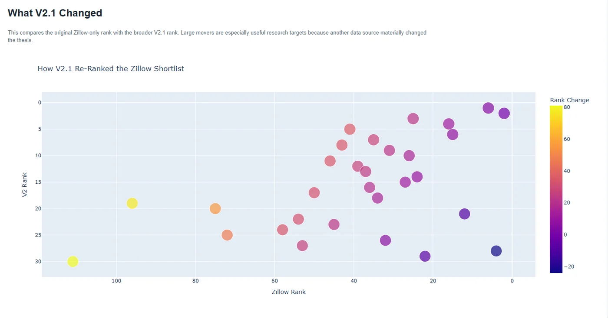
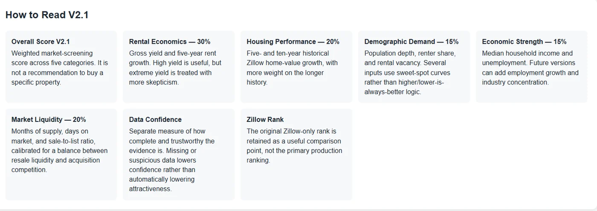
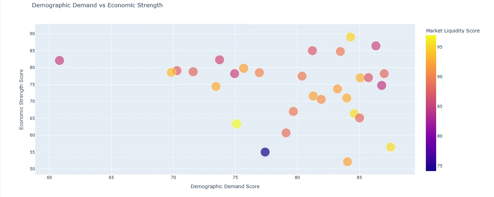
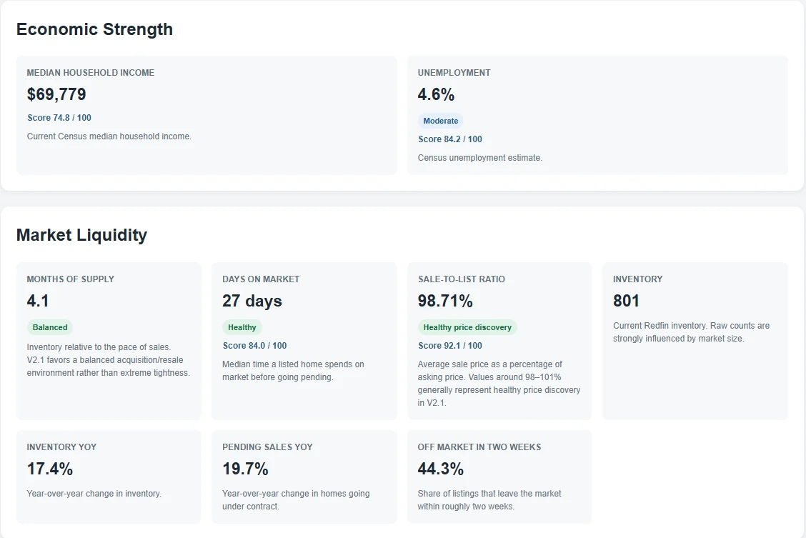
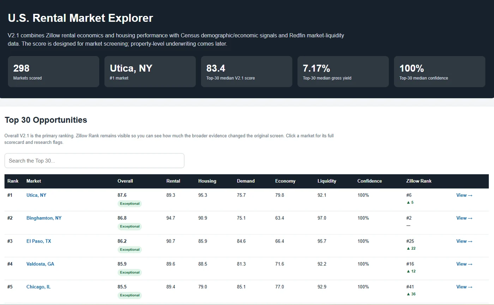
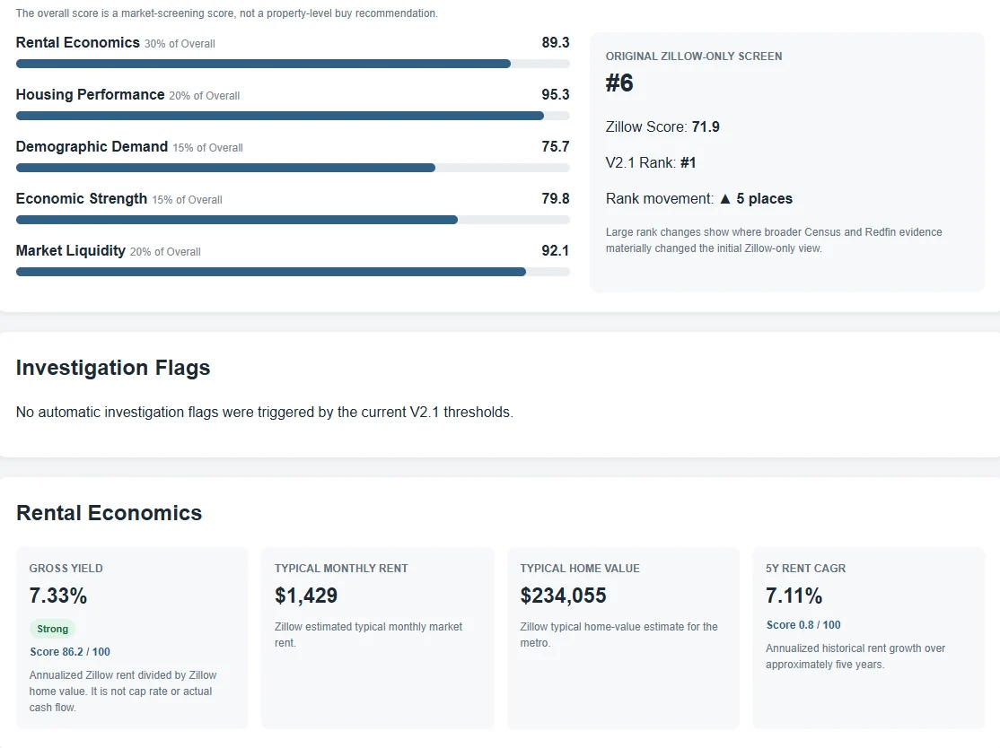

Project Overview
The Housing Market Scanner began as an experiment in using publicly available information to explore real estate markets across the United States. I wanted a way to look beyond familiar locations, understand the differences between markets, and make more informed financial decisions for myself and potentially the people around me.
What started as a small Python prototype using Zillow housing data eventually grew into a multi-source research application. I incorporated additional housing and economic information, developed processes for cleaning and validating it, and experimented with ways to evaluate markets from several perspectives.
By Version 2.1, the scanner could evaluate 298 U.S. markets and generate an HTML market explorer alongside 30 individual market reports. The result is a research tool, not an investment recommendation, and a foundation I can continue improving.
Concept & Inspiration
I've always been interested in how technology can help make complicated decisions more approachable. Housing seemed like a particularly interesting subject: two cities might have similar home prices but very different rental conditions, economic trajectories, and long-term trends.
I wanted to explore those differences systematically rather than rely on a handful of familiar places or isolated statistics. The initial idea was simple: gather public data, compare locations, and see which questions emerged.
Python felt like a natural place to start. I could begin with a small experiment, learn from the output, and gradually build something more sophisticated without committing to a huge application on day one.
I also imagined a visual component from the beginning. I wanted the results to become something I could browse and understand, not just numbers printed in a terminal.
Design & Planning
I organized the project around a few stages: collect information, clean and standardize it, analyze it, validate the results, and present what I found.
The early development environment was straightforward: Python 3.12 on Windows, PowerShell, and a virtual environment for dependencies. I planned to keep individual responsibilities separate so I could change a data source or improve an analysis step without rewriting the entire project.
A repeatable workflow mattered to me. Housing data changes over time, so the scanner needed a way to refresh its inputs and regenerate results without requiring the same manual steps every time.
The visual interface was part of the plan even though I built the data foundation first. I wanted to earn the visuals by making sure the underlying information was coherent and useful.
Tools & Technologies
Python was the backbone of the project. I used it to load CSV datasets, clean and combine records, evaluate indicators, validate intermediate outputs, and generate reports.
The data sources included Zillow home-value and rental histories, Redfin housing-market information, and Census or other economic and demographic datasets. Each source offered a different perspective, but they also introduced differences in geography, reporting periods, naming, and missing observations.
CSV files made it easy to inspect intermediate data, while separate Python scripts helped keep the processing stages manageable. For presentation, I used HTML reports and charts that could be opened directly in a browser.
The tools themselves were fairly accessible. The more difficult work was getting them to cooperate reliably and ensuring the resulting comparisons made sense.
High-level architecture diagram: public datasets → cleaning and matching → validation → evaluation → HTML reports.
Development Process
5.1Building the First Prototype
I began with Zillow home-value and rental datasets and tried to compare markets with overlapping histories. The first prototype was small, but it gave me a practical way to explore calculations and see how the results behaved.
I quickly discovered that a correct calculation could still produce a misleading result if the underlying data was incomplete or inconsistent. That realization shaped much of the work that followed.
5.2Cleaning Data & Handling Unexpected Results
Some early outputs looked far more dramatic than expected. One market appeared to show an implausibly large change in rent, which prompted me to investigate the records rather than celebrate the result.
I began adding sanity checks, reviewing historical coverage, and improving how incomplete observations were handled. Matching market names and geographies also became an important task as the project grew.
The lesson was that data quality needed to be part of the system, not a final inspection step.
5.3Expanding the Data Sources
Once the Zillow prototype was working, I expanded into additional housing, demographic, and economic information. Each new dataset added useful context, but also required decisions about how records should be joined and compared.
Markets were not always named the same way. Time periods and definitions could differ. Some locations had strong coverage in one source and gaps in another.
I developed a more consistent internal structure so the scanner could combine information without assuming every source was directly comparable.

5.4Building the Scoring System
My earliest approach was a relatively simple ranking. Over time, I realized that one number could conceal important differences between markets.
I experimented with broader evaluation categories and considered how signals should interact. I also separated the quality and completeness of the available data from the apparent attractiveness of a market.
The goal was not to produce an unquestionable answer. It was to create a useful starting point for further investigation.

5.5Understanding the Indicators
One of the most educational parts of the project was researching the signals themselves. I didn’t want to assign values to unfamiliar measurements and trust whatever ranking emerged. I wanted to understand what each indicator actually described, where it could mislead me, and how it related to the others.
5.5.1Rental Economics
I explored concepts such as gross rental yield, rent growth, and price-to-rent relationships. These measures can be useful for comparison, but they don’t tell the entire story. Operating expenses, maintenance, vacancies, financing, and property-specific circumstances can change the picture significantly.
A promising headline number is a reason to investigate, not proof of profitability.
Opportunity Cost & Investment Philosophy
The scanner also prompted broader conversations about debt, financing, risk, and the opportunity cost of different choices. I learned to distinguish between whether a market looked interesting and whether acting on that opportunity would make sense for a particular person at a particular time.
Those discussions helped me think more carefully about the trade-offs behind financial decisions without assuming there was one universally correct approach.
5.5.2Housing Performance
I looked at long-term home-value changes and how consistently markets performed. Stable growth interested me, but I also wanted to understand downturns rather than automatically dismiss them. A decline might reflect a temporary shift or a deeper structural issue.
Historical performance provides context, not a guarantee of what happens next.
5.5.3Demographic Demand
Population changes and household formation offered another way to understand market direction. I was particularly interested in growing cities, while recognizing that the pace of growth matters less than whether it appears sustainable and supported by local conditions.
Demographic trends become more useful when considered alongside housing supply and the broader economy.

5.5.4Economic Strength
Employment, income, and unemployment helped me evaluate the overall health and trajectory of local economies. I focused on the bigger picture: whether a market appeared economically resilient and capable of supporting future demand.
No single economic statistic could capture that on its own.
5.5.5Market Liquidity
Sales activity, inventory, and time on market helped provide context about how housing markets functioned. I treated liquidity as a measure of market health and activity, not as a strategy for quickly buying and selling properties.
The broader objective was to understand conditions that could support stable, fair, reasonably priced housing over time.
5.5.6Data Confidence
I learned to distinguish between an attractive result and a trustworthy one. A market could score well while relying on incomplete histories or inconsistent source coverage.
Separating data confidence from other evaluations made uncertainty more visible. Validation can catch many problems, but it cannot guarantee that every underlying source is correct.

5.6Automating the Pipeline
As the application grew, running scripts individually became tedious and made it easier to miss a step. I reorganized the workflow into a coordinated pipeline that handled collection, preparation, validation, evaluation, and reporting in the correct order.
By Version 2.1, the pipeline contained ten major stages. A representative run completed in approximately 15 seconds and produced results for 298 markets. The exact runtime varied, but the important achievement was making the process repeatable and easier to maintain.
5.7Building the Visual Interface
From the beginning, I imagined the Housing Market Scanner having some kind of visual interface. I’ve always enjoyed bringing a visual element into my projects, and I didn’t want this one to remain a collection of Python scripts and spreadsheets.
Once the underlying processing was working, I began generating HTML reports I could open in a browser. I wanted to move between broad comparisons and more detailed market information without digging through raw CSV files.
The combined market explorer and 30 individual reports gave the project those complementary views. Charts and summaries also helped reveal unusual patterns and questionable values that were less obvious in raw output.
One challenge was deciding how much information to show. Presenting every measurement at once could overwhelm the reader, so organizing the information became part of the design problem.
The visual reporting helped the project feel like a complete application rather than a collection of scripts.


Challenges & Solutions
Like most of my projects, the Housing Market Scanner involved plenty of trial and error. Some challenges were programming problems. Others were more subtle: the code could execute successfully while still producing misleading results.
Incomplete housing histories required coverage checks. Implausible values prompted investigation flags and validation rules. Inconsistent market names required more careful geographic matching. Different source formats needed separate preparation steps before they could be combined.
Early rankings also taught me to distinguish between a market’s apparent performance and the reliability of the information behind it. As the number of scripts grew, automating their execution made the process more repeatable. And when the outputs became difficult to interpret, HTML reports helped make the results easier to inspect.
One recurring challenge was tracing an unusual result back to its source. Was it an issue in the original data, a mismatch introduced during processing, or a mistake in my code? I learned to inspect intermediate outputs, test assumptions, and treat unexpected results as questions to investigate.
By Version 2.1, the project had dedicated processing, validation, evaluation, and reporting components. The biggest improvement was developing a workflow where I could find problems and improve the system without starting over.
The recurring lesson: good data analysis requires just as much skepticism as programming.
Final Results
By Version 2.1, the Housing Market Scanner had evolved considerably from its original Python prototype. What began as an experiment with housing datasets had become a functioning research application capable of combining public information, evaluating markets, and generating visual reports.
The automated workflow evaluated 298 U.S. markets and produced an HTML market explorer alongside 30 individual market reports. It brought together multiple data sources, cleaning and matching processes, validation, multidimensional analysis, and browser-based reporting.
The most satisfying part was seeing the individual components work together. Large amounts of raw information became something I could explore and learn from.
The results weren’t limited to the software. I gained experience in Python, data integration, debugging, workflow design, and the economics of housing markets. I also became more thoughtful about uncertainty, opportunity cost, and the difference between identifying an interesting market and making a financial decision.
The scanner isn’t finished, but it reached an important milestone: a functioning research system I could continue developing and using to explore real-world questions.
Lessons Learned
Building the Housing Market Scanner taught me considerably more than I initially expected. I started with a simple idea: use Python and public data to explore real estate markets. Along the way, I learned about data engineering, economics, financial risk, and the difficulty of turning complex information into something genuinely useful.
Understanding the data. More data doesn’t automatically mean better information. Missing observations, inconsistent definitions, and unusual values can distort an analysis. I learned to investigate unexpected outcomes and build validation into the workflow.
Understanding the indicators. I spent time learning what individual housing measures actually represented, how they interacted, and where they could mislead me. Combining indicators requires judgment; different assumptions can change the result.
Opportunity cost and risk. The project sparked conversations about financial priorities, debt, financing, and long-term trade-offs. Identifying an interesting opportunity and deciding whether to pursue it are different questions.
Building reliable software. I became more comfortable separating a growing Python application into components, combining datasets, debugging processing stages, and automating repeatable work. Sometimes the code ran exactly as written but still produced the wrong interpretation.
Making information accessible. The visual reports weren’t just decoration. They helped me examine the results, communicate uncertainty, and notice issues that were hard to spot in tables.
The biggest takeaway is that a useful tool doesn’t need to make decisions for you. It needs to help you understand information, recognize uncertainty, and make better-informed decisions yourself.
Future Improvements
I still consider the Housing Market Scanner an ongoing project. Version 2.1 proved that the underlying workflow could function, but there are many ways to make it more reliable, accessible, and useful.
Improving the analysis. I’d like to continue testing the system, examining unusual results, and making its strengths and limitations easier to understand. Better interpretation interests me more than simply adding more measurements.
Expanding research capabilities. The scanner provides a broad view of markets. Over time, I’d like to explore ways to investigate neighborhoods and individual properties in more detail, while making sure the existing foundation remains dependable.
Improving the visual experience. I’d like to move toward a more interactive interface where comparisons are easier and relationships between indicators are clearer. This is an especially appealing part of the project because it combines programming, analysis, and design.
Making the system more robust. Additional testing, better responses to source-data changes, clearer errors, and preservation of historical results could make the application easier to maintain and study over time.
Ultimately, I want this to remain a research tool that makes complicated information easier to explore and question. I’d rather improve it thoughtfully than add features simply because I can.
Project Archive
Every project has a history that doesn’t always make it into the finished result. For the Housing Market Scanner, that history includes early datasets, experimental scripts, debugging sessions, and the gradual development of a working application.
10.1The Original Prototype
The earliest version used public housing data and Python to compare markets and explore historical trends.
Early scripts, sample datasets, initial outputs.
10.2Expanding the Data
Adding housing, demographic, and economic information introduced new challenges around geography, reporting periods, and source definitions.
Data processing examples and source-flow diagram.
10.3Debugging & Validation
Unexpected values and mismatched records led to improved validation and a more deliberate analytical workflow.
Anomalies, debugging examples, before-and-after validation.
10.4Building the Automated Pipeline
Individual scripts became a coordinated ten-stage workflow, making repeated analysis easier to run and maintain.
Pipeline diagram and terminal output.
10.5The Market Explorer
HTML reports transformed the project into something I could browse visually, including a combined explorer and detailed pages for selected markets.
Explorer screenshot, individual report screenshot.
10.6Version 2.1 Milestone
By September 2026, the scanner evaluated 298 markets and generated an HTML explorer and 30 individual market reports. This was a meaningful development milestone, not the end of the project.
V2.1 release materials and selected documentation.
10.7Future Updates & Development Roadmap
Version 2.1 represents a milestone rather than a finished product. As I continue working on the scanner, I’d like to document meaningful releases, new capabilities, and lessons learned.
Possible directions include a more interactive interface, deeper local research, improved data reliability, historical comparisons, and more accessible reporting. These are exploratory directions rather than committed release dates.
Development log:
- V2.1: Completed September 2026: automated pipeline, 298 evaluated markets, HTML explorer, and individual market reports.
- Future versions: Exploratory: interface improvements, expanded research, and continued refinement.
I don’t have a fixed endpoint in mind. Part of the enjoyment comes from experimenting, discovering new questions, and building the tools needed to investigate them.
Archive note: This Chronicle documents a personal technology experiment. Certain calculations, research methods, and detailed outputs are intentionally excluded from the public archive. The scanner is not personalized financial or investment advice.
The next chronicle is on its way.
Each project gets its own report as it reaches a milestone. Check back, or read the first one.